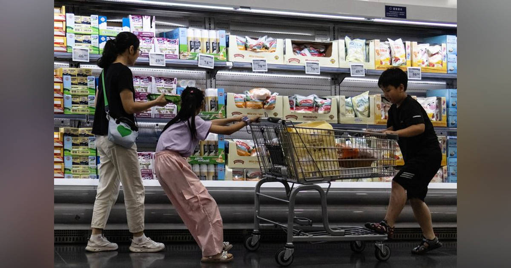

01【のれん118億円】つるとんたんを売った華麗なる一族の流儀
| NewsPicks原文
あなたに関係ありそうな理由
事業を売る判断は、店舗数だけでなく、ブランド価値、運営負担、次の投資機会でも変わるためです。
カトープレジャーグループは「つるとんたん」の事業をサンマルクホールディングスに128億円で売却することで合意した。国内外15店を展開し、売却額のうち118億円がのれんに当たる。記事は、2024年に72店の「資さんうどん」がすかいらーくホールディングスへ240億円で売却された例と比べ、店舗数に対して高い評価になった理由を追う。創業者の加藤友康氏は24歳で創業し、大きな器、店ごとに変える内装、幅広いメニューなど、標準化や店舗数の拡大を優先しない運営を選んできた。100店へ増やせば経営の目が届かず、品質を保ちにくいという判断が、約15店にとどめる理由だった。グループの出発点であるレジャーホテルの経験から、明るく清潔な空間と価格が分かりやすい表示、少し遊びのある設計を組み合わせ、店に入る敷居を下げたという。
二代目社長の加藤宏明氏は、約1年前から売却を検討した。旗艦店は老朽化して大規模投資が必要になっていたが、営業は好調で席が埋まっていた。ブランドの価値が高い時期に売り、より多く店舗を展開できる買い手へ任せた方が、グループが進める他事業のM&Aへ資金を回せると判断した。売り手は最低金額を崩さず、サンマルクがのれんを含む評価を受け入れた。東京スカイツリー店は2026年6月、小型のモデル店舗として開き、家族のレジャー利用を意識した。記事は取引のEV/EBITDA評価が15倍を上回ると推計する。
表示コメントでは、118億円ののれんはブランド資産を評価した金額だという見方と、買収後に償却分を回収できるほど店舗を増やせるのかという疑問が出た。創業者の独特な感覚を引き継げるかも論点だ。売却は不振事業の整理ではなく、成熟したブランドの価値を確定し、次の投資へ移す選択として描かれる。ただし、ブランドへの高い評価を実際の成長に結びつけられるかは、買い手に残された課題となる。
店舗当たりの単価は高く見えるが、単純な割り算だけでブランドや事業の価値を測り切れるわけではない。記事が紹介する売却理由は営業不振ではなく、旗艦店の投資負担とグループの次の成長機会を同時に考えたことにある。ブランドを広げる責任も買い手は引き受ける。
仕事や会話で使える一言
のれんの金額を、買い手はどんな成長計画で回収するのでしょうか。
02米国債の安定的な買い手に異変－日本の買越額99%減、友好国60%超減
| NewsPicks原文
あなたに関係ありそうな理由
米国債の購入主体と資金調達価格の変化は、金利・為替・投資先を考える材料になるためです。
米財務省と国務省の統計では、2026年1〜8月に米国と関係の深い国・地域が米国債を純購入した額は1743億ドルだった。短期証券を除く集計で、前年同期から6割超減り、この期間として2021年以来の低水準だ。日本の純購入は3億8900万ドルと99%減少し、韓国は238億ドルを売り越した。韓国の売却額は1977年以降の同期間で最大で、台湾も売り越しとなった。ただし、国別統計は政府と民間の取引を区別できず、どの国が何を買ったかの開示も限られる。数字だけから「友好国が米国債を手放した」と断定することはできない。
記事が強調するのは、外国の保有残高そのものが急減したわけではない点だ。外国人保有額は8月時点で7.85兆ドルと過去最高に近い一方、連邦債務に占める割合は2012年の52%から3分の1未満に下がった。米国の債務残高は40兆ドルを超え、海外の公的機関による買いが弱まる穴を民間投資家が埋めている。民間投資家の保有割合は約70%で、1990年以降の高水準だ。彼らは価格に敏感なため、米国債を買ってもらうには利回りを上げる必要が生じやすい。10年債利回りはこの年5%を超えた局面があり、10月28日のアジア時間には約5.01%だった。
売買の変化には、各国通貨安、国内金利、株式など他の投資先、為替介入、米国の政策への懸念が関係し得ると記事は述べるが、単一の原因は示していない。政府系の自動的な買いが減ることは、ドル離れや米国債市場から買い手が消えたこととも同じではない。巨大で流動性の高い米国債市場を一度に代替できる市場も見当たらない。焦点は買い手の不在ではなく、米政府が資金を調達する価格と市場の変動が大きくなる可能性だ。表示コメントは日本の99%減を8か月だけの数字と注意し、ヘッジ費用や国内金利など複数要因の見方を示した。これらはコメントの解釈で、記事が原因と確定したものではない。
記事は、米国と関係の深い国・地域を57カ国に分類し、国際保管先の所在地が国別統計を歪める可能性にも注意を促す。公的機関の買い越し減だけで、民間資金を含む外国保有の縮小や脱ドル化を結論づけないことが重要だ。数字の期間と分類方法を確かめて読む必要がある。
仕事や会話で使える一言
買い手が減ったかだけでなく、誰が買い、その資金が何に反応するかを見ていますか。
03「対策を後回しにしたサーバが軒並み狙われている」 相次ぐ不正アクセスにラックCTOが警鐘
| NewsPicks原文
あなたに関係ありそうな理由
脆弱性管理や委託先を含む日々のシステム運用は、企業の情報管理にも直結するためです。
ラックの倉持浩明CTOは10月28日のKDDI SUMMITで、脆弱性検査を後回しにしたサーバーが狙われていると話した。例として、脆弱性診断がないまま公開されたサーバー、WAFを入れていないシステム、古いPHPを使う環境を挙げる。攻撃者側ではAIなどの道具で公開サーバーを広く調べ、弱点を見つける時間と費用が下がった。脆弱性の発見から悪用までの間隔も短くなり、月1回のパッチ適用だけでは追いつかない恐れがあるという。
同社が多く確認するのは、情報窃取型マルウェア「インフォスティーラー」による認証情報の盗難だ。端末や保存されたブラウザーのパスワードが抜かれると、攻撃者が正規利用者になりすまして社内サービスへ入る可能性がある。倉持氏は端末だけでなくサーバーにもEDRを導入し、侵入後の不審な外向き通信を監視するよう勧めた。仮想化基盤を複数のシステムで共有している場合は、一台の侵害が横へ広がることもあるため、侵入テストで影響範囲を調べる必要がある。
記事によれば、AIがまったく新しい攻撃を生んだというより、これまで費用が合わず見過ごされていた弱点を見つけやすくしたことが変化の中心だ。企業が社内で決めた重要度と、攻撃者が探す順番は一致しない。担当部署が優先度を低く置いた古いサーバーが、重要なシステムへ入る入口になることもある。対策として、基本的な更新と設定の徹底、安全性を設計段階から組み込むこと、継続的なセキュリティ状態の把握、DevOpsによる早い修正が挙げられた。AIを使った監視も有効だが、人の判断と組み合わせる姿勢が示されている。表示コメントにも、まず基本対策を一貫して実行する重要性や、自動化と人の判断を併用する必要性が出た。コメント内の外部被害統計は記事の裏付けではないため、ここでは根拠として使わない。
倉持氏は、企業側の優先順位と攻撃者が最初に見つける弱点はずれると説明する。古い単体サーバーでも、公開状態なら入口になり得るため、外から見える資産を把握し、継続的に点検する必要がある。月1回の更新では間に合わない場合、脆弱性情報の確認と修正の仕組み自体を速めなければならない。公開資産の棚卸しも欠かせない。
仕事や会話で使える一言
優先度を下げている公開サーバーが、攻撃者の入口になっていませんか。
04「ペット可」から「ペット共生」へ。ペットと暮らす賃貸住宅の現状と海外事情
| NewsPicks原文
あなたに関係ありそうな理由
賃貸住宅の供給・賃料・管理事例を複数の根拠で扱い、賃貸運営に関係する実務情報が多いためです。
犬猫の飼育頭数が子どもの数を上回り、ペットは住まいの選び方にも影響する存在になっている。2024年の国内の犬猫は約1595万頭で、15歳未満人口約1383万人を上回った。LIFULL HOME’Sが2026年10月に公表した調査では、2026年1〜7月の首都圏賃貸掲載物件のうち、ペット可は30%だった。住まい探しで必須にされる条件でも「ペット相談可」は5位。ペット可物件を探した人の91.6%は、ペットがいることを理由に不便や困難を感じたと答えている。
一方、ペット可物件の平均賃料は他の物件より高く、2026年1〜7月は東京で3万9682円、神奈川で2万4520円、千葉で1万6971円、埼玉で1万9713円の差があった。ただし、これはペット可物件とそれ以外の平均差で、同じ部屋をペット可にした場合の上乗せ額とは限らない。広さや築年数など別の条件が混ざる可能性もある。空室対策として賃料にそのまま乗せられると決めつけないことが大切だ。
記事は「飼育を許可する」だけでなく、人とペットが共に暮らせる賃貸住宅の事例を紹介する。旭化成のPAWTNERは2026年4月に管理戸数2万戸を達成し、室内設備に加えて獣医師への相談や入居前のマナー確認を用意する。東急不動産の物件にはペットラウンジ、足洗い場やトリミングサービスがあり、JKK東京の住宅ではドッグガーデンやペット相談室を整えた。2025年10月の募集では、JKKのペット等共生住宅の平均申込倍率は約2.3倍だった。URは猫向けの住戸も試みている。
海外制度の例では、ペット飼育を認める権利と、近隣への配慮や損害への責任を組み合わせる考え方が示される。日本で供給を増やす場合も、設備、飼育条件の表示、入居後の管理、災害時の避難まで含めた設計が課題になる。表示コメントは、平均賃料差をそのままプレミアムと見なさず、物件の違いと運営負担を分けるべきだと指摘した。
南砂町EASTは14階建て143戸で、ペットと使える共用部やトリミングサービスを備える。URの「ねころぶ住宅」は猫のステップやDIY壁など、犬中心になりがちな設備に猫向けの選択肢を加える。共用設備と管理の両面を整える事例だ。
仕事や会話で使える一言
ペット可の賃料差だけでなく、設備・管理・入居後の負担も合わせて検討したいですね。
05中国、高齢者人口が初めて子ども上回る 少子高齢化鮮明に
| NewsPicks原文

あなたに関係ありそうな理由
人口構造の転換を具体的な人口・扶養比率と政策背景で示し、長期の市場や社会を考える材料になるためです。
中国で65歳以上の人口が、14歳以下の子どもの人口を初めて上回った。2025年の65歳以上は2億2300万人を超え、子どもは約2億1300万人だった。高齢者扶養比率は23.1%となり、子ども扶養比率の22%を超えた。高齢者比率は2016年の15%から2021年に20%を上回っており、変化は短期の一時的な振れではない。人口全体は2025年に4年連続で減り、出生率は過去最低になった。
記事は背景として、1980年から2015年まで続いた一人っ子政策と急速な都市化を挙げる。出生数の減少に加え、年齢構成が上側へ移っていることが数字から見て取れる。政府は結婚や出産を促すため、世帯への補助、保育支援、出産関連の医療費負担を下げる施策を導入してきた。高齢者人口が子どもを上回ったという境目は、中国の家族政策や人口施策だけでなく、将来の社会保障、労働力、消費の姿を考える基礎になる。記事はこれを、少子高齢化が進む中国の現状を映す節目として伝えている。
表示コメントで森昭博・未来政策研究所代表は、日本が高齢化を先に経験した国として、介護の社会実装の知見をアジアへ伝えられる可能性に触れた。また、中国の高齢者市場に日本の介護事業者が関心を持つことや、日本の介護保険制度が移行期の参考になる可能性を挙げた。これはコメント投稿者の見立てであり、記事が事業機会を確定したものではない。人口の逆転は一つの数字だが、制度や地域により家族の負担、働き手、支援の届き方は異なる。これからの政策が出生率や子育て世帯を支える効果を示すか、また急増する高齢者に必要なサービスをどう整えるかを、長期の統計と併せて見る必要がある。
扶養比率は働く年齢層に対する支援対象の人数を表す指標で、23.1%は65歳以上が働く世代100人に約23人いる計算になる。子ども扶養比率との逆転は人口の年齢構成が変わったことを端的に示す。政府は世帯補助、保育支援、出産関連医療費の軽減などで結婚・出産を促しているが、記事は政策効果がすでに表れたとは述べていない。支援策の実施と人口の回復を分けて追いたい。これらの政策が出生数や高齢者支援にどう影響するかは、数年単位で確認したいところだ。
仕事や会話で使える一言
高齢化の比率だけでなく、子育て支援策が人口の動きにどう表れるかも追いたいですね。